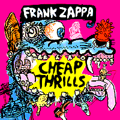

Заппа'zУх!Ой!
русский более или менее регулярный бюллетень для поклонников американского композитора
Frank'а Vincent'а Zappa'ы
Выпуск.5 (16 мая 1998)
На кого дешевое сердито?
Комания Rykodisc, которую иные революционно настроенные поклонники FZ, из числа матросов, солдат и системных администраторов, настоятельно требуют придать суду истории сегодня же, продолжает мелко и подозрительно суетиться. А именно, точно в назначенный день, 27 апреля сего года, выпускает в свет очередную компиляцию, уже изданного один раз материала, RCD10579 - ДЕШЕВЫЕ ВОСТОРГИ / CHEAP THRILLS.
Cheap thrills in the back of my car
Cheap thrills, how fine they are
Cheap thrills up and down my spine
I need it
I need it
'Cause it feels fine
Туда и сюда, вверх, вниз по хребту! Сколько можно терпеть эти мелкобуржуазные мурашки, немедленно разворчались бузотеры всех мастей по обе стороны Атлантики. Где тяжелая артиллерия концертных архивов и быстрые танки сокровенного студийного ад либитум? А если мы уже полжизни под это прошагали?
| Песенка | Слышали в |
| ---------------------------- | ---------------------------- |
| 1. I Could Be A Star Now | PLAYGROUND PSYCHOTICS |
| 2. Catholic Girls | YOU CAN'T DO THAT ON STAGE ANYMORE VOL. 6 |
| 3. Bobby Brown | YOU CAN'T DO THAT ON STAGE ANYMORE VOL. 3 |
| 4. You Are What You Is | THING-FISH |
| 5. We Are Not Alone | THE MAN FROM UTOPIA |
| 6. Cheap Thrills | CRUISING WITH RUBEN & THE JETS |
| 7. Mudshark Interview | PLAYGROUND PSYCHOTICS |
| 8. Hot Plate Heaven At The Green Hotel | BROADWAY THE HARD WAY |
| 9. Zomby Woof | YOU CAN'T DO THAT ON STAGE ANYMORE VOL. 1 |
| 10. Torture Never Stops | YOU CAN'T DO THAT ON STAGE ANYMORE VOL. 4 |
| 11. Joe's Garage | YOU CAN'T DO THAT ON STAGE ANYMORE VOL. 3 |
| 12. My Guitar Wants to Kill Your Mama | YOU CAN'T DO THAT ON STAGE ANYMORE VOL. 4 |
| 13. Going For The Money | PLAYGROUND PSYCHOTICS |
Даже отчаянные фигли-мигли обложки работы изобретательного Кэлвина Шенкеля не возбуждают аппетит у заждавшейся настоящих новинок публики. Впрочем, и не должны. Не к низким фанатским инстинктам аппелирует Ryko, а к разуму.
Дело в том, что серия компиляций, CD'ков с вещами, надерганными из других, таких же круглых и блестящих, начатая парой Strictly Commercial (1995), Strictly Genteel (1997) и нынешней весной продолженная Дешевкой, часть (что же, признаем и свою собственную недальновидность) очень разумной и продуманной маркетинговой политики мужичков из города Салем, штат Массачусетс.
Поборов пару лет назад Rhino Records и купив у Zappa Family Trust за безумные бабки права на переиздание всех прижизненных пластинок маэстро, Рико после долгих и плодотворных трудов праведных имеет ныне все положенные герою молотка и мастерка склерозы, хандрозы, и, в том числе, тяжелый розничный застой.
С таким недугом вы сразу перестаете нравиться пошлякам, торгующим музончиком, их уже не тянет у вас заказывать партии дисков с дырочками в центре одного конкретного автора, соответственно штамповать новые вам не на что, даже при неуемной любви к этому самому отдельно взятому автору. Ну, и что делать, если в морг вам пока не хочется, если вам там холодно?
| Лечиться, снимать порчу. Рекрутировать новых поклонников. Вместо тяжелых двойников по двадцать баксов за упаковку, предлагать одинарный - за шесть с копейками. Ну, кто же удержится? За шесть-то баксов, да с такой крокодилой на обложке! А въехав, глядишь, вернется в магазин новообращенный и уже гордо, высокомерно, как и полагается меломану-филофонисту, потребует: |
 |
- Человек, а ну, мне теперь вон, который наверху, который потолще. Там, блин, такой песняк, ваще, сливаю.
И все, пошли пузатые двойные в ход, тома You Can't Do That On Stage Anymore (сколько их, ого, и все с одним и тем же названием:-)), да Thing-Fish с Playground Psychotics на пару. Кровообращение восстановлено. Можно идти дальше. Ставить новые цели, принимать повышенные обязательства.
Старая, добрая практика, между прочим. В моем допотопном виниловом One Size Fits All конвертик, а на конвертике Warner Brothers'овский купончик Lost Leaders. Ножницами чик, заполняшь и тебе, лично, домой присылают за две бумажки вот тааааааааакой двойник! А на нем, на нем, чего только нет, за пару баксов, и Хендрикc, и Бифхарт, и Дип Перпл некий с песней опять же про Фрэнка Заппу
We all came out to Montreux
On the Lake Geneva shoreline
To make records with a mobile
We didn't have much time
Frank Zappa and the Mothers
Were at the best place around
But some stupid with a flare gun
Burned the place to the ground
Smoke on the water, fire in the sky
Обязательно купишь Механическую Голову в порядке ознакомления, например, с исторической обстановкой.
Ладно, но какая польза нам в молодой, лишь тянущейся к общемировым ценностям России от этих хитроглистых штучкек-дрючек бездуховного общества тотального потребления? Примерно та же, хотя, как на клиентов, Рико пока на нас, вроде бы, и не рассчитывает. Двойники Заппы, особенно Stage-серии крайне непопулярны у отечественных оптовиков-лабазников, не везут, не складируют, путают концертные сборники с заурядными компиляциями. А цены на те, что все же притащили, кусаются, не послушав, едва ли решишься взять. Так что, действительно, недорогой шанс. Не знаю, правда, по какому курсу наши пурпурные трансильвании станут переводить эти шесть с мелочью долларов, но надеюсь не звериному, а значит и наши любители прекрасного смогут убедиться, до какой степени при первом исполнении в 1975 Torture Never Stops была похожа на Smokestack Lightning Howlin' Wolf'а.
Возвращаясь же к обожравшимся волкам-американцам, заметим, что Рикодиск, на сознательность их особенно не полагаясь, разослал подписчикам заппавского мэйл-листа в предверии начала продаж Дешевых Восторгов специальное сообщение, адресованное напрямую железам фанатского снобизма и гордого высокомерия. Цитата:
We've found a way to slide you CHEAP THRILLS without having to face the humiliation of paying for it!
Да, друзья, пока свободою горим, пока сердца для чести живы, ваше верное Рико никогда, никогда не унизит настоящих ценителей и знатоков покупкой Дешевки!
Серьезно! Любой заказавший непосредственно у Rykodisk три других компакта из списка, получит новенький бесплатным приложением. Ага!
Я же говорю, маркетинг, бля, маркетинг, бля, маркетинг!
Искренне Ваш, Владимир Советов
http://www.arf.ru/
| Домой | Заппа'zУх!Ой! | Поиск | Хозяин |